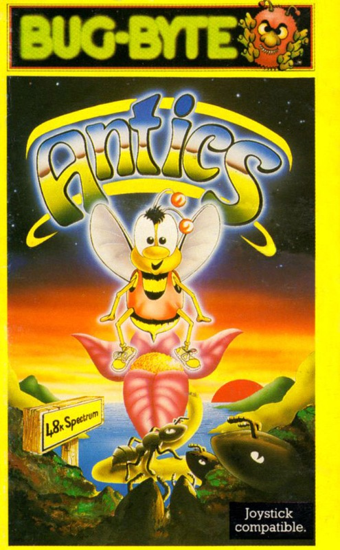
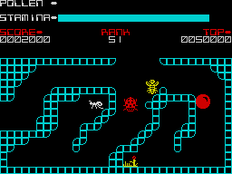
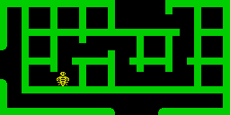

Antics


{kind=link}

| Publisher: | Bug-Byte |
| Price: | £5.95 |
| Year: | 1984 |
| Source: | CRASH, Issue 6 |

In the time honoured cinema tradition of ‘once you’ve got a hit on your hands — hit it again’, Antics is The Birds and the Bees II. It can’t really be called Son of Birds and the Bees, since the hero of Antics is Barnabee, who happens to be a cousin to Boris Bee, the hero of the previous game. (Some of these games recently are getting a cast list as complicated as a Shakespeare play!).
The scenario states that Boris Bee (he of B&B fame) has been set upon by a vicious gang of ants and locked away somewhere within their nest, to await a terrible fate (what, worse than death?). Fortunately for Boris, help is at hand in the shape of his cousin Barnabee, who is about to launch a daring mission of rescue.

The game takes the form of a large number of interlinked mazes which represent the various layers of the ants’ nest. Barnabee starts off above ground by his hive and can fly to the right through four screens avoiding the blue birds which kill on contact. In screen three and four there are entrances to the ant complex below ground. The object is to discover the whereabouts of imprisoned Boris and rescue him. Boris will follow Barnabee if he is close enough, but Boris is weak, so you have to fly slowly on the way out back to the hive.
The nest is infested with ants and beetles. Contact with these creepies will sap Barnabee’s strength (Bar code above) but visiting the flowers that also live in the nest will restore strength through pollen. Some flowers have the property of opening up walls in the mazes when they are visited. The wall opened may not be in the maze on screen at the time. In some mazes the walls are weak and will collapse as Barnabee touches them. There are also energy-sapping thorns embedded in the walls of the mazes.
Antics is played to the tune of Bach’s Toccata Fugue in D — a sort of jazzed up version. Is that why J.S. Bach appears in the halls of fame along with Mrs Mopp, AAAAAAA and Mr. Spock? There’s also Dr. Jones Did Not Believe It in there too.
CRITICISM

‘Don’t prejudge this game because it’s a follow up to The Birds and the Bees — it does have the same style graphics, but the game itself is much better. Also, saying the game is totally arcade would be wrong; there are several elements of adventure and even strategy involved. The graphics are well drawn and colourful. Although not a great deal is going on on the screen at once, don’t worry — ants and beetles are surprisingly difficult to outrun and keep you active enough. The sound is just great with a well-known tune played continuously (like Manic Miner and Jet Set Willy). This can be switched off if it drives you mad. The keyboard layout is just perfect (in fact same as JSW). The bee flaps his wings very realistically and does have forward momentum (you can’t stop dead right away). Overall a highly addictive game — I must just have one more go before switching off...’
‘This is a great game. There isn’t a lot more I can say. It’s got great graphics, continuous tunes, it’s playable and addictive and I think it’s excellent.’
‘Antics is a polished piece of software with many neat graphics touches like the scrolling Hall of Fame, the names scrolling up while disappearing behind the horizontally scrolling game details. Simple keys (left, right and flap wings) make control something that you don’t have to think about, although any joystick will work, the keyboard is better. What makes Antics a non-standard maze game is the adventure element whereby visiting certain of the flowers allows exits in the maze which weren’t there before to open up. At first I thought Antics was a charming looking game with not much going for it, but a few minutes playing soon cures you of that. Controlling Barnabee is a difficult task as he has a high inertia — guiding him through narrow openings in a vertical wall can be very frustrating when stamina is running out. This is a game that needs a map drawn! Very playable and surprisingly addictive.’
COMMENTS
| Control keys: | Q/W and alternates on rest of row = left/right, bottom row=flap wings, S=sound on, A=sound off. |
| Joystick: | Any |
| Keyboard play: | With three keys, very easy, keys are responsive but it takes getting used to the momentum factor |
| Use of colour: | Excellent |
| Graphics: | Excellent — smooth, detailed, fast and clear |
| Sound: | Excellent — continuous tune which manages to continue while a death rattle sounds if you lose your life! |
| General rating: | Original, playable and addictive excellent value and highly recommended. |
| Use of computer: | 89% |
| Graphics: | 90% |
| Playability: | 92% |
| Getting started: | 87% |
| Addictive qualities: | 92% |
| Originality: | 87% |
| Value for money: | 90% |
| Overall: | 90% |